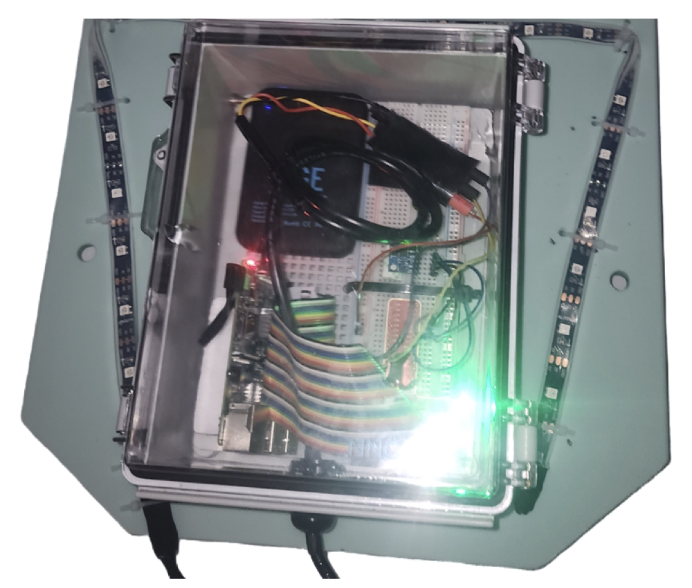
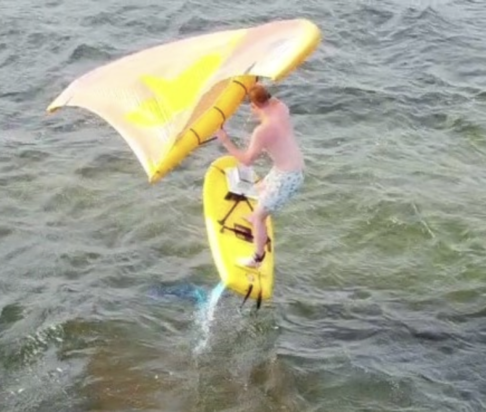
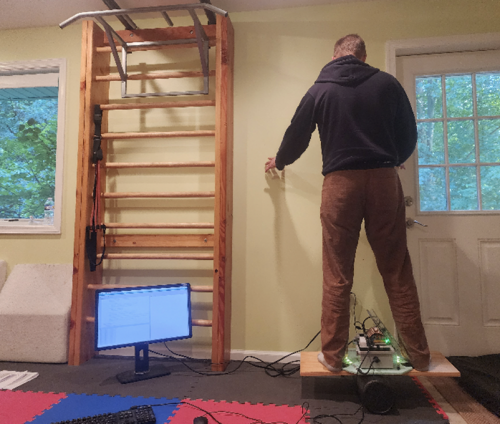
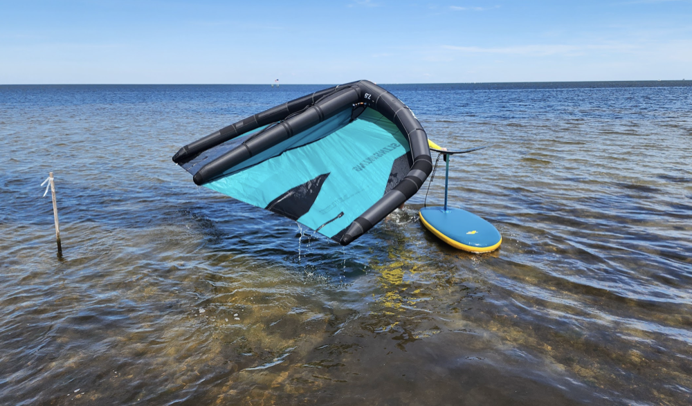
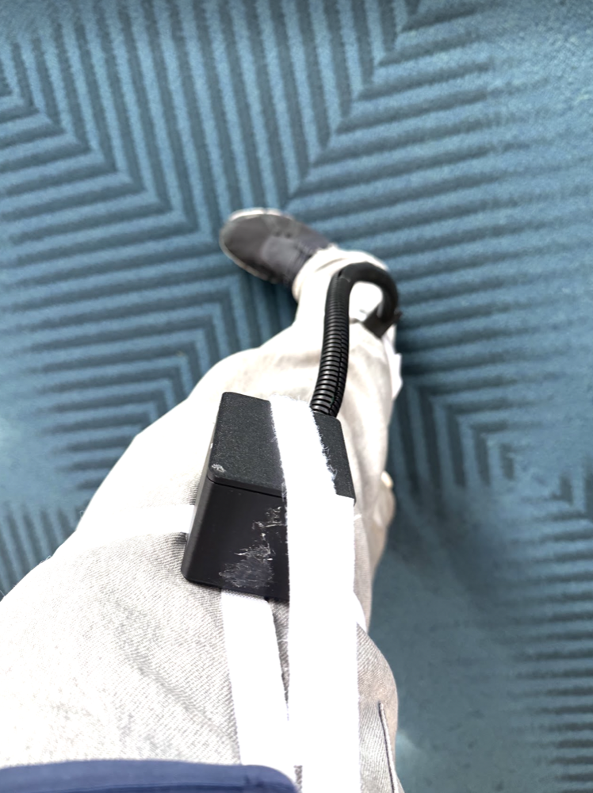
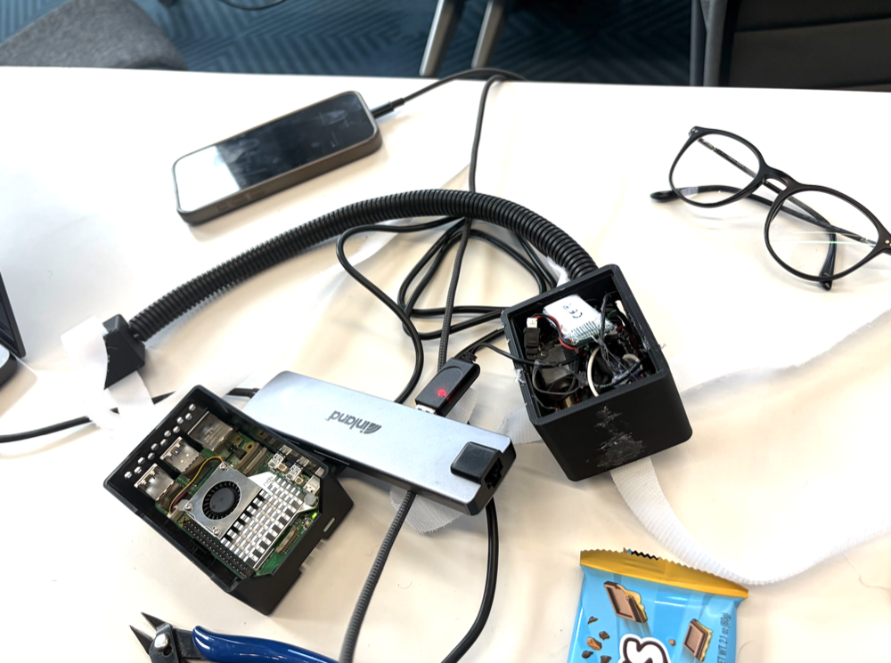
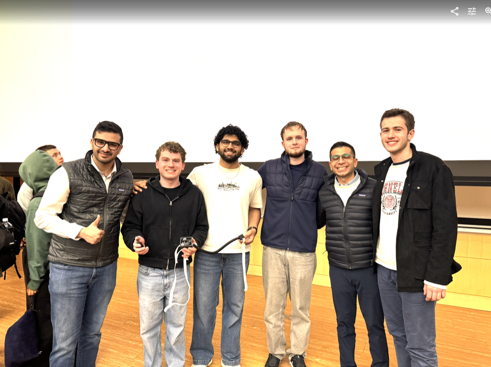
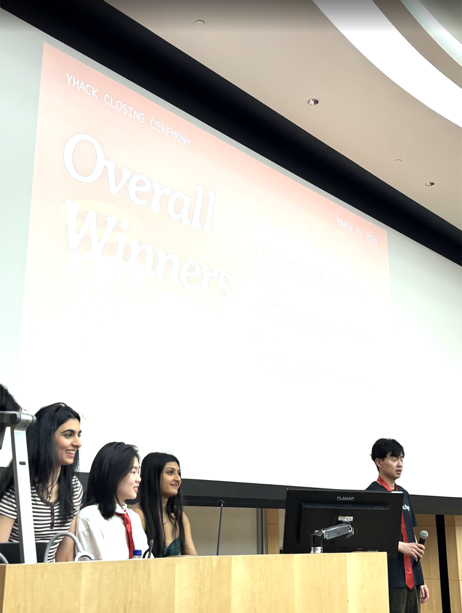

Projects(hover over images)
Foilpal
Wearable, ML-powered wingfoiling trainer that analyzes motion and gives real-time light cues to improve balance and reduce falls. Integrated an IMU, GPS, LEDs, and a Raspberry Pi to collect movement data and adapt feedback based on prior riding patterns. Visit foilpal.com




GaitGuard
Co-created a wearable rehabilitation system that compares a user's movement against an ML-generated personalized "healthy twin" and delivers real-time corrective feedback. Recognized at YHack and featured on the official Cornell Bowers CIS website. View on Devpost




GateAgent
A continuation of GaitGuard with more of a research focus, still very much in progress. The idea is to connect GaitGuard's approach with AI agents toward a single, universal program that can independently diagnose and analyze movement, efficiently, hasn't been done before. (Sorry, no pictures yet :( )